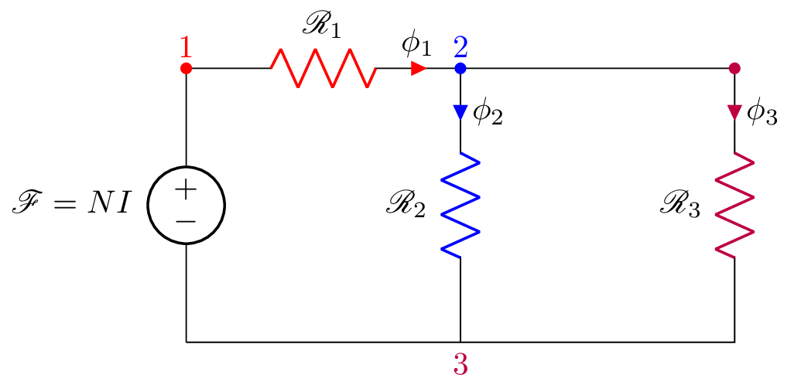

\documentclass{standalone}
\usepackage[american]{circuitikz}
\usepackage{graphicx}
\usepackage{mathrsfs}
\usepackage{latexsym,amssymb,amsmath}
\newcommand{\equal}{=}
\begin{document}
\begin{circuitikz}
\draw (0,3) to [V,l_=$\mathscr{F}\equal NI$] (0,0)
(0,3) node[anchor=south] {$\textcolor{red}{1}$} to [R,i^>=$\phi_1$, l^=$\mathscr{R}_1$,*-,color=red] (3,3)
node[anchor=south] {$\textcolor{blue}{2}$}
to [R, l_= $\mathscr{R}_2$, *-, i>^=$\phi_2$,color=blue] (3,0)
node[anchor=north] {$\textcolor{purple}{3}$}
%(3,3) -- (6,3) to [L=$L$, i>^=$i_L(t)$, v=$v_L(t)$] (6,0) -- (0,0)
(3,3) -- (6,3) to [R=$L$,l_=$\mathscr{R}_3$, i>^=$\phi_3$, *- ,color=purple] (6,0) -- (0,0)
(6,0) -- (0,0)
;\end{circuitikz}
\label{fig:q1fig}
\end{document}Created by David Li